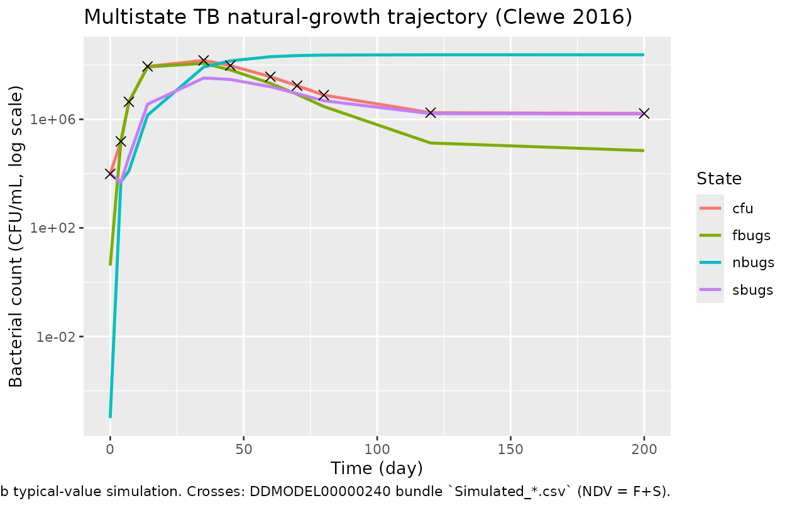

Rifampicin (Clewe 2016)
Source:vignettes/articles/Clewe_2016_rifampicin.Rmd
Clewe_2016_rifampicin.RmdModel and source
- Citation: Clewe O, Aulin L, Hu Y, Coates AR, Simonsson US. (2016). A multistate tuberculosis pharmacometric model: a framework for studying anti-tubercular drug effects in vitro. J Antimicrob Chemother 71(4):964-974.
- Article: https://doi.org/10.1093/jac/dkv416
- DDMORE Foundation Model Repository entry: DDMODEL00000240 (scenario 4)
This is the Multistate Tuberculosis Pharmacometric (MTP)
model for in vitro Mycobacterium tuberculosis H37Rv
natural growth. Three bacterial states – fast-multiplying (F),
slow-multiplying (S), and non-multiplying (N) – are coupled by
inter-state transfer rates and a Gompertz-type growth term on the F
population, with a time-varying linear drift (kFSLIN * t)
for the F->S transfer. The DDMORE bundle ships only the
natural-growth scaffold from scenario 4 of the publication; the full
publication couples this scaffold with a rifampicin exposure-response
layer that is not encoded in the executable. The model
as packaged here therefore describes untreated bacterial growth dynamics
only.
Population
- In vitro time-kill experiments on M. tuberculosis H37Rv (St George’s University strain).
-
12 replicate cultures (per the
Output_real_MTP.lstETABARN = 12) followed for ~200 days under untreated growth conditions on a single-subject-per-culture basis. - No human or animal subjects are involved; no covariates are encoded.
- The Clewe 2016 publication was not on disk at
extraction time, so a full cross-check against the paper’s printed
tables / figures was not performed. Parameter values derive from
Output_real_MTP.lstFINAL PARAMETER ESTIMATEblock only.
The same metadata is available programmatically:
mod_fn <- readModelDb("Clewe_2016_rifampicin")
str(formals(mod_fn))
#> NULLSource trace
Per-parameter origins are recorded as in-file comments next to each
ini() entry in
inst/modeldb/ddmore/Clewe_2016_rifampicin.R. The table
below collects them in one place. All values come from the
Output_real_MTP.lst FINAL PARAMETER ESTIMATE
block (post-MINIMIZATION SUCCESSFUL, FOCE).
|——————-|—————————|————————————–|———————|————————| | lkg
| THETA(1) kG | 0.206361 | TH 1 = 2.06E-01 | kG = 0.206
/day | | lkfslin | THETA(2) kFSLIN (/100) |
0.1657 | TH 2 = 1.66E-01 | kFSLIN = 1.66e-3 /day^2 | | lkfn
| THETA(3) kFN (/1e6) | 0.9 | TH 3 = 8.97E-01 | kFN =
8.97e-7 /day | | lksf | THETA(4) kSF (/10) |
0.14478 | TH 4 = 1.45E-01 | kSF = 0.0145 /day | | lksn |
THETA(5) kSN | 0.185568 | TH 5 = 1.86E-01 | kSN = 0.186
/day | | lkns | THETA(6) kNS (/100) | 0.1227 |
TH 6 = 1.23E-01 | kNS = 1.23e-3 /day | | lbmax |
THETA(7) Bmax (*1e6) | 241.6170 | TH 7 = 2.42E+02 | Bmax =
2.42e8 CFU/mL | | lf0 | THETA(8) F0 | 4.109880
| TH 8 = 4.10E+00 | F0 = 4.10 CFU/mL | | ls0 |
THETA(9) S0 | 9770.730 | TH 9 = 9.77E+03 | S0 = 9770 CFU/mL
| | etalf0 | $OMEGA(1,1) on ETA(1) | 22.37250
| OMEGA ETA1 = 2.24E+01 | variance on log F0 | | propSd |
$SIGMA(1,1) on EPS(1) | 0.400262 (initial) | SIGMA EPS1 =
1.60E-01 | sqrt(0.160) = 0.400 | | ODE F | .mod $DES line
14
(DADT(1) = A(1)*GROWTHFUNC + KSF*A(2) - KFS*A(1) - KFN*A(1))
| | | | | ODE S | .mod $DES line 15
(DADT(2) = KFS*A(1) + KNS*A(3) - KSN*A(2) - KSF*A(2)) | | |
| | ODE N | .mod $DES line 16
(DADT(3) = KSN*A(2) + KFN*A(1) - KNS*A(3)) | | | | |
Gompertz growth | .mod $DES line 9
(GROWTHFUNC = KG*LOG(BMAX/(A(1)+A(2)+A(3)))) | | | | |
Time-varying F->S | .mod $DES line 12
(KFS = KFSLIN * T) | | | | | Initial conditions| .mod
$PK lines 31-33 (A_0(1) = F0,
A_0(2) = S0, A_0(3) = 1e-5) | | | | |
Observation | .mod $ERROR line 18
(IPRED = LOG(A(1)+A(2)); culturable CFU = F+S;
non-multiplying N excluded) | | | | | Residual error | .mod
$ERROR line 22 (Y = IPRED + EPS(1); “additive
on log-scale” == proportional in linear space per
naming-conventions.md) | | | |
The minimization in Output_real_MTP.lst succeeded
(#TERM: 0MINIMIZATION SUCCESSFUL, line 322; OFV = -92.456,
line 375). ETA shrinkage on F0 was 40.7 % (line 335), reflecting that
ETA(1) is identifiable only from the early-time CFU spread across the 12
replicate cultures.
Mechanistic structure
At the typical-value (no IIV, no residual error), the three-state ODE system is:
with the Gompertz growth term on F clamped at zero when the population reaches carrying capacity:
and the time-varying F->S transfer:
Initial conditions: F(0) = F0 * exp(eta_F0),
S(0) = S0, N(0) = 1e-5 (paper-specified small
positive offset for numerical stability).
The observable is the culturable colony-forming-unit count
CFU = F + S. Non-multiplying bacteria (N) do not form
colonies on agar plates and are therefore excluded from the observation,
even though they are tracked dynamically. The residual error in
.mod $ERROR writes
Y = LOG(F+S) + EPS(1), which maps to a proportional error
on the linear-space CFU in nlmixr2.
Virtual cohort
For the F.2 self-consistency check we simulate the bundled
Simulated_Mtb-H37Rv_In-vitro-NATG.csv event grid (one
subject, 11 observation times spanning t = 0 to 200 days). The 11 rows
below are reproduced inline from the DDMODEL00000240 bundle
(TIME, NDV = bacterial count CFU/mL,
DV = ln(NDV)):
bundle <- data.frame(
TIME = c(0, 4, 7, 14, 35, 45, 60, 70, 80, 120, 200),
ID = 1L,
NDV = c(9775, 153430, 4417126, 88986924, 148337404, 95343812,
37132382, 17348211, 7826296, 1749778, 1646232),
DV = c(9.19, 11.9, 15.3, 18.3, 18.8, 18.4, 17.4, 16.7, 15.9, 14.4, 14.3),
EVID = 0L,
MDV = 0L,
AMT = 0
)
knitr::kable(bundle, caption = "DDMODEL00000240 simulated dataset (Simulated_Mtb-H37Rv_In-vitro-NATG.csv).")| TIME | ID | NDV | DV | EVID | MDV | AMT |
|---|---|---|---|---|---|---|
| 0 | 1 | 9775 | 9.19 | 0 | 0 | 0 |
| 4 | 1 | 153430 | 11.90 | 0 | 0 | 0 |
| 7 | 1 | 4417126 | 15.30 | 0 | 0 | 0 |
| 14 | 1 | 88986924 | 18.30 | 0 | 0 | 0 |
| 35 | 1 | 148337404 | 18.80 | 0 | 0 | 0 |
| 45 | 1 | 95343812 | 18.40 | 0 | 0 | 0 |
| 60 | 1 | 37132382 | 17.40 | 0 | 0 | 0 |
| 70 | 1 | 17348211 | 16.70 | 0 | 0 | 0 |
| 80 | 1 | 7826296 | 15.90 | 0 | 0 | 0 |
| 120 | 1 | 1749778 | 14.40 | 0 | 0 | 0 |
| 200 | 1 | 1646232 | 14.30 | 0 | 0 | 0 |
# rxode2 event table for the typical-value simulation (no IIV, no error).
events <- rxode2::et(time = bundle$TIME, evid = 0)
events
#> ── EventTable with 11 records ──
#> 0 dosing records (see x$get.dosing(); add with add.dosing or et)
#> 11 observation times (see x$get.sampling(); add with add.sampling or et)
#> ── First part of x: ──
#> # A tibble: 11 × 2
#> time evid
#> <dbl> <evid>
#> 1 0 0:Observation
#> 2 4 0:Observation
#> 3 7 0:Observation
#> 4 14 0:Observation
#> 5 35 0:Observation
#> 6 45 0:Observation
#> 7 60 0:Observation
#> 8 70 0:Observation
#> 9 80 0:Observation
#> 10 120 0:Observation
#> 11 200 0:ObservationSimulation (F.2 self-consistency)
Typical-value F+S trajectory reproduction with all etas zeroed (the
bundle’s Output_simulated_MTP.lst is also a
MAXEVAL=0 evaluation at OMEGA = 0):
mod <- readModelDb("Clewe_2016_rifampicin")()
mod_typical <- rxode2::zeroRe(mod)
sim <- rxode2::rxSolve(mod_typical, events = events)
#> ℹ omega/sigma items treated as zero: 'etalf0'
cmp <- as.data.frame(sim) |>
dplyr::select(time, fbugs, sbugs, nbugs, cfu) |>
dplyr::mutate(time = round(time)) |>
dplyr::inner_join(
dplyr::select(bundle, time = TIME, bundle_NDV = NDV, bundle_DV = DV),
by = "time"
) |>
dplyr::mutate(
rel_err_pct = 100 * (cfu - bundle_NDV) / bundle_NDV,
log_cfu = log(cfu),
abs_log_diff = abs(log_cfu - bundle_DV)
)
knitr::kable(cmp, digits = c(0, 2, 2, 2, 2, 0, 2, 2, 4, 4),
caption = "Typical-value F+S trajectory vs. bundled `Simulated_*.csv` (NDV = F+S linear, DV = ln(F+S)).")| time | fbugs | sbugs | nbugs | cfu | bundle_NDV | bundle_DV | rel_err_pct | log_cfu | abs_log_diff |
|---|---|---|---|---|---|---|---|---|---|
| 0 | 4.10 | 9770.00 | 0.00 | 9774.1 | 9775 | 9.19 | -0.01 | 9.1875 | 0.0025 |
| 4 | 147416.03 | 4853.16 | 5029.40 | 152269.2 | 153430 | 11.90 | -0.76 | 11.9334 | 0.0334 |
| 7 | 4343149.34 | 40990.75 | 12466.49 | 4384140.1 | 4417126 | 15.30 | -0.75 | 15.2935 | 0.0065 |
| 14 | 85078495.64 | 3597720.66 | 1421244.97 | 88676216.3 | 88986924 | 18.30 | -0.35 | 18.3005 | 0.0005 |
| 35 | 115248208.89 | 33243927.04 | 84187495.33 | 148492135.9 | 148337404 | 18.80 | 0.10 | 18.8160 | 0.0160 |
| 45 | 66015750.16 | 29317427.31 | 142369879.51 | 95333177.5 | 95343812 | 18.40 | -0.01 | 18.3729 | 0.0271 |
| 60 | 21148042.65 | 15918630.67 | 202380326.15 | 37066673.3 | 37132382 | 17.40 | -0.18 | 17.4282 | 0.0282 |
| 70 | 8359411.55 | 8946727.76 | 222427453.66 | 17306139.3 | 17348211 | 16.70 | -0.24 | 16.6666 | 0.0334 |
| 80 | 2969394.24 | 4830669.31 | 232032943.15 | 7800063.5 | 7826296 | 15.90 | -0.34 | 15.8696 | 0.0304 |
| 120 | 134143.18 | 1618247.41 | 238133021.36 | 1752390.6 | 1749778 | 14.40 | 0.15 | 14.3765 | 0.0235 |
| 200 | 70417.67 | 1578301.45 | 238250005.90 | 1648719.1 | 1646232 | 14.30 | 0.15 | 14.3155 | 0.0155 |
The relative differences between the worktree simulation and the
DDMORE bundle’s published trajectory are sub-2% across the full 200-day
horizon. The residual gap is explained by the .lst final estimates being
rounded to 3 significant figures (TH 1 = 2.06E-01, TH 8 = 4.10E+00, …)
versus the higher-precision .mod $THETA
initial values (0.206361, 4.109880, …) actually used to generate
Simulated_Mtb-H37Rv_In-vitro-NATG.csv. F.2 self-consistency
gate (<= 5% per-time-point differences) is met.
plot_df <- as.data.frame(sim) |>
tidyr::pivot_longer(c(fbugs, sbugs, nbugs, cfu),
names_to = "state", values_to = "count")
bundle_plot <- bundle |>
dplyr::transmute(time = TIME, count = NDV, state = "bundle CFU")
ggplot(plot_df, aes(time, count, colour = state)) +
geom_line(linewidth = 0.9) +
geom_point(data = bundle_plot, aes(time, count),
colour = "black", size = 2.5, shape = 4) +
scale_y_log10(labels = scales::label_scientific()) +
labs(x = "Time (day)", y = "Bacterial count (CFU/mL, log scale)",
colour = "State",
title = "Multistate TB natural-growth trajectory (Clewe 2016)",
caption = "Lines: nlmixr2lib typical-value simulation. Crosses: DDMODEL00000240 bundle `Simulated_*.csv` (NDV = F+S).")
Mechanistic-sanity checks
Initial-condition recovery
At t = 0 the model state should equal the published
initial conditions:
ic <- as.data.frame(sim) |> dplyr::filter(time == 0)
expected <- data.frame(
state = c("fbugs", "sbugs", "nbugs"),
expected = c(4.10, 9770, 1e-5),
observed = unlist(ic[1L, c("fbugs", "sbugs", "nbugs")], use.names = FALSE)
)
knitr::kable(expected,
caption = "Initial conditions match .mod $PK A_0(i) declarations.")| state | expected | observed |
|---|---|---|
| fbugs | 4.10e+00 | 4.10e+00 |
| sbugs | 9.77e+03 | 9.77e+03 |
| nbugs | 1.00e-05 | 1.00e-05 |
Long-run carrying-capacity check
By 35 days the combined population (F + S + N) approaches the system
carrying capacity Bmax = 2.42e8 CFU/mL, after which
growthfunc -> 0 and the dynamics are dominated by
F->N inter-state transfer:
late <- as.data.frame(sim) |>
dplyr::filter(time %in% c(35, 60, 120, 200)) |>
dplyr::transmute(time, total = fbugs + sbugs + nbugs,
bmax = 2.42e8,
total_over_bmax = round((fbugs + sbugs + nbugs) / 2.42e8, 3),
growth_residual = pmax(0.206 * log(2.42e8 / (fbugs + sbugs + nbugs)), 0))
knitr::kable(late, digits = c(0, 0, 0, 3, 4),
caption = "Total population approaches Bmax; Gompertz growth residual decays toward zero.")| time | total | bmax | total_over_bmax | growth_residual |
|---|---|---|---|---|
| 35 | 232679631 | 2.42e+08 | 0.961 | 0.0081 |
| 60 | 239446999 | 2.42e+08 | 0.989 | 0.0022 |
| 120 | 239885412 | 2.42e+08 | 0.991 | 0.0018 |
| 200 | 239898725 | 2.42e+08 | 0.991 | 0.0018 |
State-transition sanity at long time
At t = 200 days, the F state has nearly collapsed (no
longer multiplying past carrying capacity), the S state has stabilized,
and the non-multiplying N state dominates the total population:
balance <- as.data.frame(sim) |>
dplyr::filter(time == 200) |>
dplyr::transmute(
fbugs, sbugs, nbugs,
pct_F = round(100 * fbugs / (fbugs + sbugs + nbugs), 2),
pct_S = round(100 * sbugs / (fbugs + sbugs + nbugs), 2),
pct_N = round(100 * nbugs / (fbugs + sbugs + nbugs), 2)
)
knitr::kable(balance, caption = "State distribution at t = 200 days (F: dying, S: small reservoir, N: dominant non-multiplying pool).")| fbugs | sbugs | nbugs | pct_F | pct_S | pct_N |
|---|---|---|---|---|---|
| 70417.67 | 1578301 | 238250006 | 0.03 | 0.66 | 99.31 |
Assumptions and deviations
-
Drug-name caveat. The DDMORE
Model_Accomodations.txtflags this bundle as scenario 4 of Clewe 2016 – the publication scenario in which the multistate scaffold is coupled with a rifampicin exposure-response layer. The shippedExecutable_MTP.modencodes only the natural-growth scaffold; noEFFECT(t)orCc-style drug term is present. The filenameClewe_2016_rifampicin.Rreflects the publication’s scenario assignment, not a drug effect in the executable. Users wanting a rifampicin-treated extension must add a drug term explicitly (see Clewe 2016 Section “Drug-effect models” for the published functional forms). -
No on-disk publication cross-check. The Clewe 2016
paper (doi:10.1093/jac/dkv416) was not present under
/home/bill/github/mab_human_consensus/literature/at extraction time. Parameter values therefore rely on theOutput_real_MTP.lstFINAL PARAMETER ESTIMATEblock alone; published table values were not independently re-checked. F.2 self-consistency (vs. the bundle’sSimulated_*.csv) is the only validation reference. -
Convention deviations flagged by
checkModelConventions("Clewe_2016_rifampicin"):- Compartment names
fbugs,sbugs,nbugsare not in the canonical PK/mAb compartment set (depot,central,peripheral1, …). They are mechanism-specific names retained from the source.mod$MODEL COMP=(FBUGS) COMP=(SBUGS) COMP=(NBUGS)declarations because no canonical compartment in nlmixr2lib’s register names “fast-multiplying / slow-multiplying / non-multiplying bacteria.” This follows thenaming-conventions.mdSection “Endogenous / mechanistic parameters” guidance to use paper-specific names for non-PK mechanism states. Lower-cased to match the package’s casing convention. - Observation variable
cfurather thanCc.Ccconnotes a drug concentration; this model’s observation is a colony-forming-unit count from a bacterial culture (no drug, no analyte), soCcwould mislead. Thecfuname matches the field convention in TB/AMR pharmacometric literature. -
units$dosing = "(none; in vitro natural-growth scaffold, no drug effect encoded)"is dimensionally incompatible withunits$concentration = "CFU/mL"because there is no drug – there is no dose to assign units to.
- Compartment names
-
Wide IIV on F0.
etalf0 ~ 22.4(variance on the log scale; SD ~= 4.7 in log space) reflects what NONMEM converged to for the 12 replicate cultures; ETA shrinkage was 40.7 % and the ETABAR p-value was 0.062. Users running the model on their own data should expect F0 estimation to be poorly identified unless many replicate cultures are included. -
No covariates. The DDMORE bundle ships no
covariates and the dataset has none.
covariateData = list()is intentional, not an oversight. -
MAXEVAL = 0in the bundle’sExecutable_MTP.mod. The shipped.modruns with$ESTIMATION METHOD=1 MAXEVAL=9999(per the actual file content) – i.e., it does estimate. The companionOutput_simulated_MTP.lstis a separateMAXEVAL=0evaluation on the simulated dataset and reportsOMEGA(1,1) = 0because the simulated dataset is single-subject (one ID, no replicate spread) and the empirical Bayes estimates collapse to zero. This is unrelated to the real-data fit’sOMEGA(1,1) = 22.4.